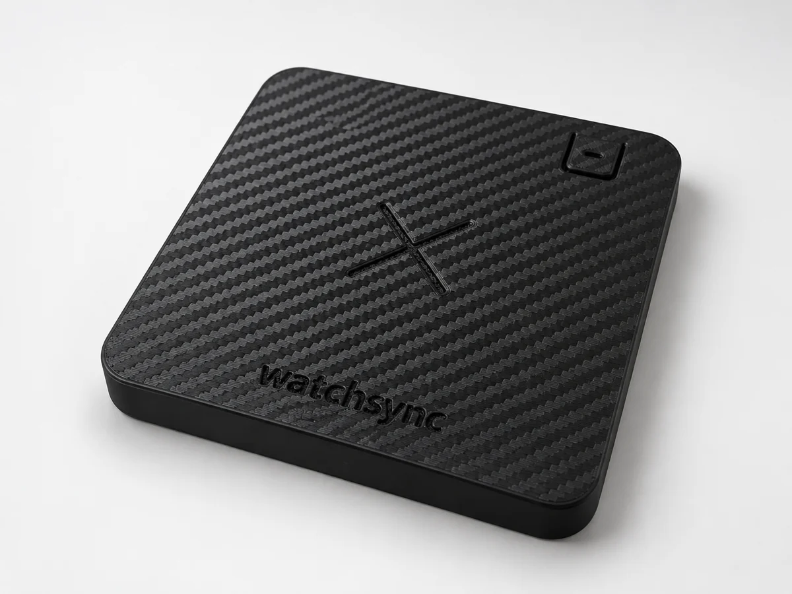
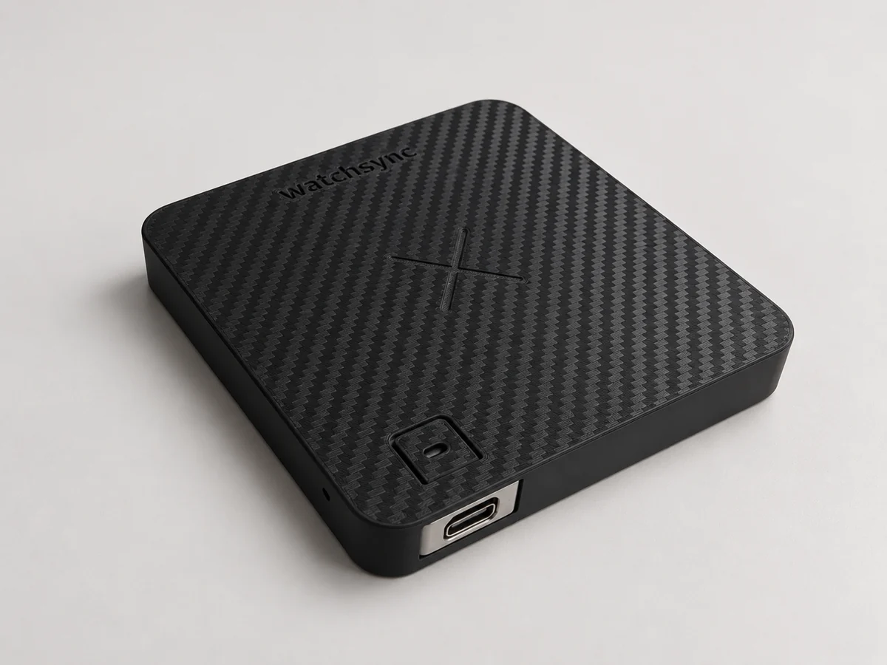
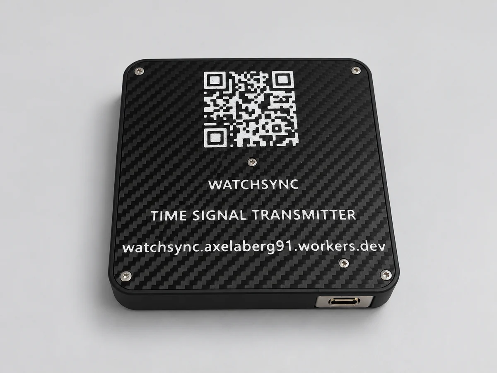

Ready-built Watchsync
Skip the build. Sync your watch.
Prefer a finished unit? Leave your details and I’ll get back to you about availability and pricing.






Range is limited. Place your watch directly on Watchsync overnight with automatic radio reception enabled, and keep it still during synchronization.
Tested with Casio Multi Band 6 watches. Watches from other manufacturers that support one of Watchsync’s transmitted time signals are also expected to work when configured for the matching signal.
A finished device, made for your watch
The enclosure and electronics are assembled, with firmware installed. Connect USB-C power, set up your 2.4 GHz Wi-Fi and choose the signal supported by your radio-controlled watch.
Check the supported time signals before registering your interest.
Want to build your own instead? The DIY guide has the parts list, printable files and instructions.
Ready when you are
Register your interest
This is an expression of interest, not an order. No payment is taken here. I’ll email you about availability, pricing and delivery before you decide.
Already have a Watchsync and need help? Use the support form.